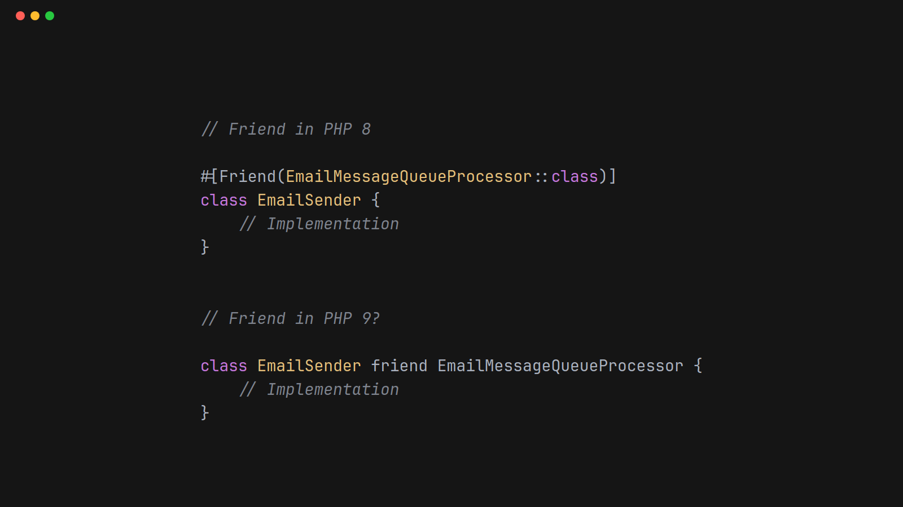

March 8th 2026

One of the great things about PHP is the language is evolving. Every November we're blessed with an update to PHP packed full of exciting new features.
The language evolves via the RFC process. Some features (e.g. attributes) took several attempts and many years before they become part of the language.
The RFC process is long and thorough for good reason. Once a feature has been added to the language, it'll be around for years. Get it wrong and developers have to live with the consequences.
As illustrated in other articles in this series some language features, e.g. friend and namespace visibility can be emulated with static analysis.
There are many benefits of using static analysis to try out new language features:
Proposing an RFC that has been extensively tested via emulation in static analysis would hopefully have a greater change of being implemented.
For the reasons above, I think non-trivial language features that can be emulated with static analysis, should be emulated in static analysis, before becoming part of the language. Those who want the feature can get it via static analysis. When it is finally released, everyone will benefit for the best possible implementation.
There are ready examples of features that started off in static analysis world have moved to PHP. E.g. the never type.
A couple of ideas from the PHP Language Extension Library have also made it to PHP.
The #[Override] attribute, which in now in PHP.
The #[MustUseResult] is similar to PHP 8.5's #[NoDiscard] attribute.
NOTE: I am not, for one minute, claiming any credit for these attributes making their way to PHP. Both my library and the relevant RFC authors were using good ideas from other languages.
It is conceivable that one day concepts like #[Friend] might make it to PHP.
Friend today:
#[Friend(EmailMessageQueueProcessor::class)]
class EmailSender {
// Implementation
}
Friend in PHP 9?
class EmailSender friend EmailMessageQueueProcessor {
// Implementation
}